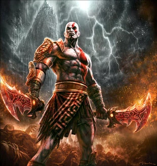

Les origines de Kratos
Kratos est originaire de Sparte, une cité-État grecque connue pour sa culture guerrière. C'est le fils de Zeus, le roi des dieux et Callisto. Il a grandi dans famille modeste et devient un redoutable soldat et se distingue rapidement sur le champ de bataille. Lors d'une bataille décisive, il se retrouve sur le point de mourir et, dans un acte désespéré, il invoque Arès, le dieu de la guerre, pour obtenir la force nécessaire pour vaincre ses ennemis. Arès accepte et lui accorde d'immenses pouvoirs, faisant de Kratos un guerrier invincible. Cependant, ce pacte le conduit à un tragique destin, notamment le meurtre accidentel de sa propre famille, un acte qui marquera à jamais son existence
Un héros en quête de rédemption
Kratos a été trompé par les dieux. Il porte le poids de ses erreurs passées. À travers son voyage, il cherche à se racheter, en particulier pour son fils Atreus, afin de lui transmettre des valeurs qu'il n'a jamais eues. Cette quête de rédemption, marquée par la violence et le doute, révèle un héros complexe et profondément humain.
God of War est une histoire de vengeance, de courage et de sacrifice.
Histoire avec la mythologie grecque
Dans les premiers God of War, l’histoire de Kratos se déroule dans la Grèce antique, où il est un ancien général spartiate rongé par la culpabilité et la haine. Après avoir été trahi par les dieux, Kratos cherche à se venger d'Arès, le dieu de la guerre, qui l'a manipulé et l'a poussé à tuer sa propre famille. Pour accomplir sa vengeance, il se lance dans une quête pour récupérer les Boîtes de Pandore, un artefact légendaire censé lui donner le pouvoir nécessaire pour renverser Arès. Tout au long de ses aventures, Kratos affronte de nombreuses créatures mythologiques et des dieux grecs, notamment Hermès, Poséidon et Athéna, qui interviendront souvent pour le guider ou l'empêcher d'atteindre son but. Dans God of War (2005), Kratos tue Arès, mais son désir de vengeance le laisse toujours tourmenté par son passé. Dans God of War II (2007), après sa défaite face à Zeus, le roi des dieux, Kratos entame une nouvelle quête pour renverser l'Olympe et se venger des dieux qui l'ont trahi. La trilogie initiale se termine dans un chaos total, avec Kratos qui tue Zeus dans un ultime acte de vengeance, mais qui laisse derrière lui une Grèce dévastée. Cette saga est marquée par la rage incontrôlable de Kratos et son inlassable quête de rédemption à travers des actions souvent tragiques.

Histoire avec la mythologie nordique
Dans la saga God of War à la mythologie nordique, Kratos cherche à fuir son passé tumultueux en s'installant dans les royaumes nordiques, où il espère mener une vie paisible avec son fils Atreus. Après avoir renversé les dieux grecs et détruit l'Olympe, Kratos quitte la Grèce pour se cacher dans les terres froides de Midgard. Dans God of War (2018), après la mort de sa femme Faye, il entreprend un voyage avec Atreus pour disperser ses cendres du sommet de la plus haute montagne des neuf royaumes. En chemin, ils rencontrent des dieux et créatures mythologiques nordiques, comme Baldur et Freya, et découvrent que Atreus est en réalité le fils de Loki, un personnage clé des prophéties sur le Ragnarök. Au fil de leur aventure, Kratos et Atreus apprennent que le destin les lie aux événements qui précipitent la fin du monde, le Ragnarök. Dans God of War: Ragnarök (2022), Kratos se retrouve confronté aux dieux d'Asgard, notamment Thor et Odin, et doit faire face à ses choix passés. Alors qu'il lutte contre son instinct de violence, Kratos cherche à protéger Atreus de son destin tout en acceptant qu'il est impliqué dans le cycle de la destinée qui pourrait mener à la destruction des dieux et à la naissance d'un nouveau monde. God of War: Valhalla (2020), bien qu'un jeu indépendant de la série principale de Kratos, se déroule dans le même univers mythologique nordique, mais avec une perspective différente, celle d'Eivor, un Viking. Cependant, l’histoire de Valhalla est liée à celle de Kratos à travers la mythologie nordique et les événements du Ragnarök, qui affectent aussi le destin des personnages. Kratos et Eivor n’interagissent pas directement, mais les deux jeux explorent des thèmes similaires comme le destin, la guerre et la relation père-fils. Ainsi, dans cette nouvelle saga, Kratos, tout en affrontant ses propres démons, doit naviguer dans les conflits entre les dieux d'Asgard et la prophétie du Ragnarök, tout en jouant un rôle important dans le destin d'Atreus, le futur Loki. Le jeu explore la rédemption et la relation complexe entre Kratos et Atreus, où Kratos tente de protéger son fils d'un héritage violent tout en l’aidant à comprendre son propre rôle dans la destinée des dieux nordiques.